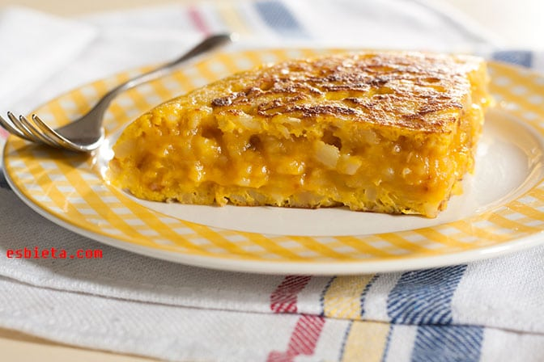

Tortilla de patatas
Ingredientes
- 4 patatas medianas
- 6 huevos
- 1 cebolla
- Aceite de oliva virgen extra
- Sal

Pasos a seguir
- Pela las patatas y la cebolla y córtalas en láminas finas.
- Fríelas en abundante aceite a fuego lento, unos 20 minutos, hasta que estén tiernas.
- Escúrrelas bien y mézclalas con los huevos batidos y sal.
- Deja reposar la mezcla 5 minutos.
- Cuaja la tortilla en una sartén con un poco de aceite, dándole la vuelta con ayuda de un plato.
Descargar la receta en PDF
Volver al menú principal del restaurante